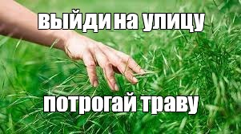

Мои увлечения
Саморазвитие
Люблю сидеть в программе для монтажа и изучать новые приёмы, которые я бы мог применить в работе, либо смотреть обучающие ролики на YouTube от профессионалов.
Почему мне это нравится:
- Это помогает привлекать заказчиков
- Расширяет портфолио
- Даёт чувство прогресса и роста
Компьютерные игры
Играл, играю и буду играть. Без игр я бы давно сошел с ума. Собраться с друзьями свободным вечером и зарубиться во что-то — лучший способ восстановить ментальное здоровье.
Почему мне это нравится:
- Отличный способ расслабиться
- Объединяет с друзьями
Прогулки
Люблю собираться с друзьями в выходные и несколько часов бесцельно бродить по городу, беседуя о чем-нибудь."
Почему мне это нравится:
- Помогает перезагрузиться
- Полезно для здоровья
- Четыре стены начинают капать на мозг и просто необходимо "потрогать траву"